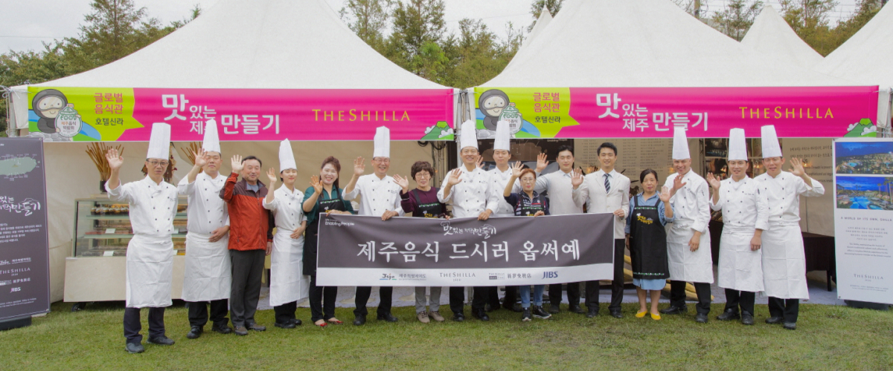
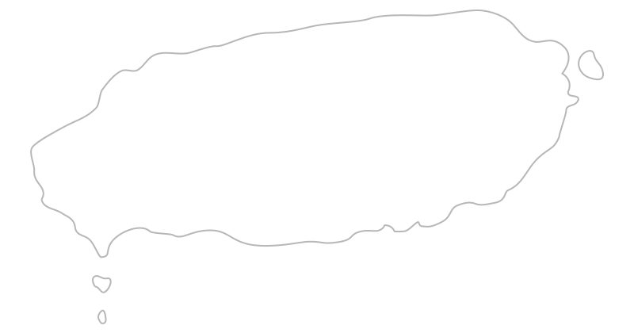
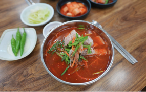

홈 : 사회공헌 > 맛있는제주만들기
맛있는 제주 만들기
Social Responsibility
호텔신라의 기품 있고 세심한 서비스 정신은 지역사회의 어려운 이웃과 함께할 때 더욱 빛을 발합니다.
‘고객과 함께 미래를 꿈꾸며, 인재와 기술을 바탕으로 최고의 제품과 서비스를 창출하여 인류사회에 공헌한다’는
경영 이념을 토대로, 어려운 이웃들에게 아름다운 마음을 실천하고 있습니다.
맛있는 제주 만들기
상생협력(특화) 프로그램제주도 영세식당지원으로 제주 음식 문화 강화
제주의 영세 자영업자들에게 재기의 발판을 제공하고자 호텔신라 임직원들이 조리법·서비스 등에 대해 맞춤 컨설팅을, 주방 설비·식당 외관 등 환경을 개선해주는 토탈기부형 프로그램입니다.
-
- 호텔 임직원 재능기부형 사업으로
영세자영식당 대상으로
조리교육 및 리모델링 등 지원 - 신메뉴 개발 지원, 위생 등
식당 운영에 대한 체계적 교육지원
- 호텔 임직원 재능기부형 사업으로
-
- 오픈 식당에 대한
메뉴 개선, 위생 등의
지속적인 사후관리 실시 - 메뉴, 위생 등 4개 분야와
22개 항목에 대한 정기점검 실시
- 오픈 식당에 대한

제주도 영세 자영식당 대상 사회 재기지원 및
제주도 영세 자영식당 대상 사회 재기지원 및
국내 주요 관광지로서의 음식문화 경쟁력 강화
2014년 시작, 제주도 내 24개 식당 재개장 진행
맛제주 재개장 이후 식당매출평균 기존 대비 약 5배증가했으며
타 지역단체 벤치마킹 등 업계 우수 사회공헌 활동으로 자리매김하였습니다.
맛있는 제주 만들기 지점 안내

JEJU ISLAND
location_on

- 1호점신성할망식당
- 제주 제주시 신대로7길 23
- 064-753-3976